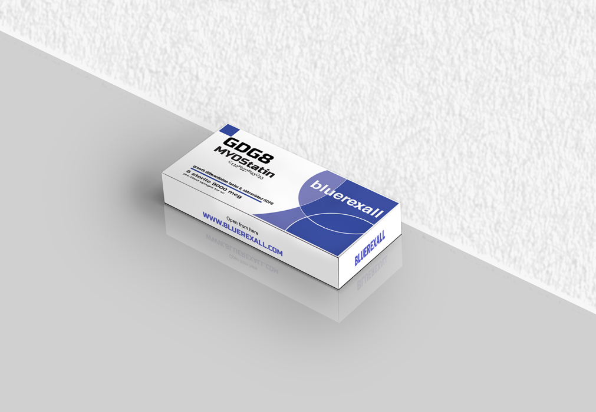
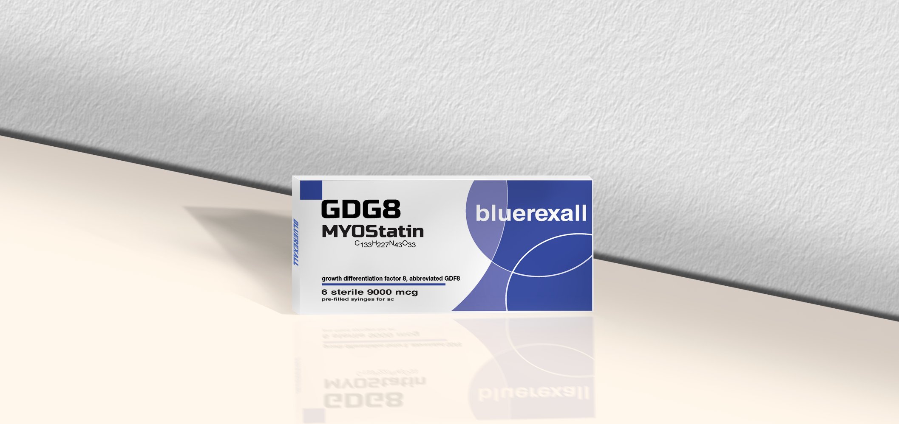

Product Gallery


About Myostatin
Myostatin is a naturally occurring regulatory protein that is widely recognized in modern muscle biology research for its role in limiting skeletal muscle growth. As part of the transforming growth factor-beta family, it functions as a key signaling molecule involved in maintaining muscular balance. Researchers often study myostatin to better understand how the body controls muscle size, tissue adaptation, and cellular growth behavior in different biological environments.
In scientific and laboratory settings, myostatin is frequently examined for its relationship with muscle-cell development, regenerative pathways, and anabolic-catabolic signaling mechanisms. Because it acts as a negative regulator of muscle formation, it has become an important target in studies that investigate how reduced signaling may influence muscle expansion, repair processes, and structural protein activity. This makes myostatin highly relevant in advanced biomedical and physiological research models.
Research interest in myostatin also extends beyond basic muscle growth alone. It is often explored in connection with tissue remodeling, protein turnover, metabolic response, and interactions with related pathways such as activins and other growth regulators. By analyzing how myostatin behaves under different experimental conditions, researchers can gain broader insight into the molecular mechanisms that influence muscular maintenance, degeneration, and recovery-related cellular responses.
Bluerexall offers Myostatin as part of its biotechnology research portfolio with a strong focus on purity, consistency, and research-grade handling standards. This product is intended strictly for research use only and is positioned for professional laboratory applications where controlled analytical conditions are essential. Its value in research lies in the insight it provides into muscle regulation, signaling balance, and the biological systems that govern tissue growth and limitation.